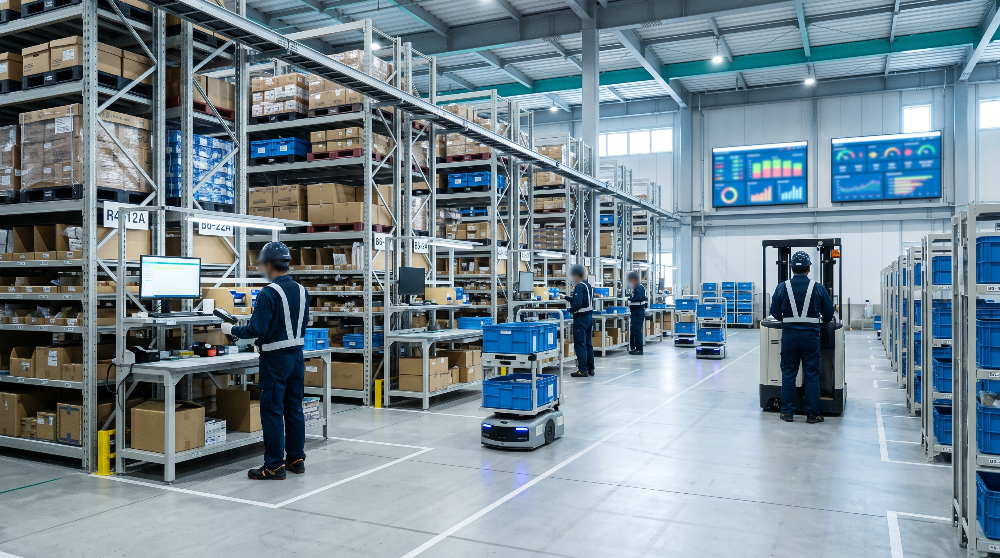

INTERVIEW
FDEForward Deployed Engineer
現場で使われて、初めて「できた」と言える。
PROFILE STORY
01CAREER STEP
これまでのキャリア
2023新卒でPALへ入社。システム部に配属され、システムに関わる業務からキャリアをスタート。
2024オペレーションエンジニアリング部（SIer課）。
NOWマーケティング本部／FDE。物流現場で使用するシステムの開発・改善・運用支援に携わる。
02JOINING REASON
PALに入社した理由
ITで誰かの役に立ちながら、現場に近い場所で課題を解決したい。もともとITやシステム開発に興味があり、自分が携わったものが誰かの役に立つ仕事をしたいと考えていました。また、技術力だけでなく、さまざまな人と関わることでコミュニケーション能力も高めたいという思いがありました。物流という生活に欠かせない分野をITの力で支えながら、実際の現場に近い立場で課題解決に取り組める点に魅力を感じ、入社を決めました。
03WORK PHILOSOPHY
仕事で大切にしていること
作るだけではなく、現場で使われるところまで見る。開発したシステムが現場でどう使われているかを確認し、必要に応じて改善する。依頼された機能を実装するだけでなく、現場の作業をより効率的にする方法まで考えます。
01
WORK
開発したものを、実際の現場まで見に行く。
現在の仕事内容と、普段どのような役割を担っているか教えてください。
現在はFDEとして、物流現場で使用するシステムの開発・改修・運用支援を担当しています。商品の仕分け作業を支援するシステムや、現場の作業状況を可視化するダッシュボードの開発、既存機能の改善、不具合の調査・対応などです。実際に物流センターへ訪問し、動作確認や現場担当者へのヒアリングを行うこともあります。依頼された機能を実装するだけでなく、「現場の作業をより効率的にするにはどうすればよいか」を考えながら取り組んでいます。
FDEの仕事で、特にやりがいや達成感を感じるのはどんなときですか？
自分が開発や改善に携わったシステムが、実際の現場で使われている様子を見たときです。開発中は画面やプログラムと向き合う時間が多いですが、現場に行くと、そのシステムを使って実際に作業している方々がいます。修正した機能で作業がスムーズになったり、これまで不便だった部分が改善されたりすると、とても嬉しく感じます。
原因がなかなか分からない不具合を調査し、解決できたときにも大きな達成感があります。技術的な課題を解決することはもちろんですが、その先にいる現場の方々の役に立てていると実感できることが、この仕事の魅力だと思います。
物流現場で使用するシステムの、開発から運用後のフォローまでを担当する。
- 01作業支援システムの開発
- 02ダッシュボードの開発
- 03既存機能の改善
- 04不具合の調査・対応
- 05現場での動作確認
- 06現場担当者へのヒアリング
- 07運用開始後のフォロー
02
FDE
技術的に正しくても、現場で使いやすいとは限らない。
PALのFDEは、一般的なエンジニアの仕事と、どんなところが違うと感じますか？
一番の違いは、システムを開発するだけでなく、実際に使用する現場に深く関われることです。現場へ行くと、開発側では気づかなかった課題や、作業する方ならではの意見を知ることができます。技術的には正しい実装であっても、現場で使いやすいとは限りません。操作のしやすさや作業効率、現場の運用方法まで考える必要があります。エンジニアとしての技術力と、現場の課題を理解する力の両方が求められることが、FDEならではの特徴だと感じています。
現場担当者から不具合や改善要望を受けるときは、起きている事象だけを聞きません。「どのような操作をしたときに発生したのか」「作業にどの程度影響しているのか」まで確認します。システムの改修や更新を行う際も、作業内容や影響範囲を事前に共有し、現場の業務に支障が出ないよう調整しています。
技術的な内容を説明するときも、相手に伝わりやすい言葉を選ぶことを心がけています。開発側と現場側では、それぞれ重視するポイントが異なることもあるため、双方の意見を理解しながら、より良い解決方法を考えることを大切にしています。
FDE（Forward Deployed Engineer）とは
顧客の業務課題を技術要件へ整理し、設計・実装・導入・運用までをつなぐエンジニアの働き方を指します。PALでは、この考え方を物流領域に適用し、物流現場とシステム開発の間をつなぐ役割として実践しています。
03
EPISODE
開発環境では動く。でも、現場では想定外が起きる。
これまでに取り組んだ仕事や改善活動で、印象に残っていることを教えてください。
特に印象に残っているのは、物流現場で使用する無線DASの導入・改善に携わったことです。既存の仕組みから新しい運用へ切り替えるにあたり、システムの機能改修だけでなく、現場での動作確認や運用上の課題への対応も必要でした。
開発環境では問題なく動作していても、実際の現場では通信環境や機器の状態、作業の進め方によって想定外の問題が発生します。現場で起きた事象を一つひとつ確認し、ログの調査と動作検証を繰り返しながら、原因の特定と改善に取り組みました。現場担当者からいただいた意見をもとに、操作性の改善や必要な機能の検討も行いました。この経験を通じて、システムは完成させることがゴールではないのだと改めて感じました。

VALUE
システムは完成させることがゴールではなく、
現場で安定して使われ、
業務の役に立って初めて価値が生まれる。
— H.Y / FDE
04
CHALLENGE
システムの問題か、現場の運用か。原因を一つずつ切り分ける。
仕事を進めるうえで難しいと感じることと、どのように乗り越えたか教えてください。
難しいのは、システム上の問題と現場の運用上の問題を切り分けながら、原因を特定することです。物流現場では複数のシステムや機器が連携して動いているため、一つの不具合にもさまざまな原因が考えられます。開発環境では再現しない問題が、現場でのみ発生することもあります。
そのような場合は、ログやデータの確認だけで終わりません。現場担当者に発生時の状況を詳しく聞き、実際の操作を確認しながら、原因を一つずつ絞り込みます。分からないことをそのままにせず、周囲の方に相談しながら調査を進めることを大切にしています。問題を解決するまでには時間がかかることもありますが、その経験が次の対応に活かされ、自分自身の成長にもつながっていると感じます。
05
GROWTH
答えを待つのではなく、自分で原因を考えるようになった。
入社してから身についた力や、成長したと感じることは何ですか？
一番成長したと感じるのは、問題が発生したときに、自分で原因を考え、解決に向けて行動する力です。入社当初は分からないことも多く、周囲の方に教えていただきながら業務に取り組んでいました。今はシステムの仕組みや現場の業務への理解が深まり、ログやデータを確認しながら原因を調査し、改善方法を検討できるようになりました。
また、システム開発の技術だけでなく、現場担当者とのコミュニケーションや、課題を整理して分かりやすく伝える力も身についたと感じています。以前は目の前の作業を完了させることに意識が向きがちでしたが、現在はその先の運用や、システムを使う方々への影響まで考えながら仕事に取り組むようになりました。
PALでは、システムの開発だけでなく、現場での検証や運用支援、改善提案まで幅広く経験できます。分からないことや難しい課題に直面することもありますが、周囲の方に相談しながら取り組むことができ、自分の担当範囲だけにとらわれず、現場全体の課題解決に関われることも魅力の一つだと感じています。
06
FUTURE
現場の声を、技術で形にできるエンジニアへ。
今後挑戦したいことや、目指している姿を教えてください。
今後は、これまで培ってきた開発経験や現場での知識を活かし、より広い視点で物流現場の課題解決に取り組んでいきたいと考えています。現在は既存システムの改修や改善に携わることが多いですが、今後は現場の課題を自ら発見し、システムの企画・設計段階から関われるようになりたいです。現場の作業状況を可視化する仕組みや、データを活用した業務改善にも興味があります。
将来的には、技術的な知識だけでなく物流業務への理解もさらに深め、現場担当者からも開発メンバーからも頼られるエンジニアになることが目標です。現場の声を技術で形にできるエンジニアを目指して、これからも挑戦していきたいです。
07
WHO FITS
FDEに向いているのは、正解を知っている人だけではない。
FDEとして働くうえで役立つ経験・スキルや、向いている人の特徴を教えてください。
プログラミングなどの技術的な知識はもちろん必要です。それ以上に、分からないことを自分で調べ、課題に粘り強く取り組む姿勢が大切だと思います。現場で働く方々と関わる機会も多いため、相手の話をしっかり聞き、何に困っているのかを理解しようとすることも重要です。
システム開発では、想定どおりに動かないことや、すぐには解決できない問題もあります。そのような状況でも、一つひとつ原因を考えながら解決していくことを楽しめる方は向いていると思います。最初からすべての知識を持っている必要はなく、業務を通じて学べることもたくさんあります。
A DAY IN THE LIFE
FDEの1日。
基本はシステムの開発・改善。そこに問い合わせや調査対応、チーム内の情報共有が加わる一日です。担当案件やその日の問い合わせ状況によって、作業内容や優先順位は変わります。ここで紹介しているのはH.Yさんの一例で、PAL全社やFDE全員の勤務時間・勤務形態を示すものではありません。
- 業務開始・状況確認
メールやチャットで、現場からの問い合わせとシステムの稼働状況を確認します。
- 課内朝礼
課内でタスクと進捗を共有し、優先順位を確認します。
- 開発・改修作業
機能開発、既存機能の改修、不具合の原因調査などを進めます。
- 休憩
昼休憩。
- 検証・調査・対応
システム改修や動作確認、不具合調査、問い合わせ対応を進めます。
- マーケティング部MTG
マーケティング部のミーティングで、担当業務の情報共有を行います。
- 継続対応・仕上げ
開発・改修・調査の続きと、修正内容の確認や残タスクの整理を行います。
- 退勤
対応した内容や残っている課題を整理し、関係者への報告や翌日の作業準備を行います。
MESSAGE
これからPALに応募する方へ、メッセージをお願いします。
自分がつくったものが、
誰かの役に立つ瞬間を見られる。
PALのFDEは、システムを開発するだけでなく、自分が携わったものが実際の現場でどのように役立っているのかを直接感じられる仕事です。初めて触れる技術や難しい課題に直面することもありますが、その分、解決できたときの達成感も大きいです。私自身も、入社してからさまざまな業務を経験する中で、多くのことを学んできました。
新しいことに挑戦するのが好きな方や、ITの力で誰かの役に立ちたいと考えている方には、とても魅力的な環境だと思います。ぜひ一緒に、物流現場をより良くする仕組みを作っていきましょう！
— H.Y / FDE（2023年・新卒入社）
RELATED
他の社員インタビューも見る
職種によって、仕事の進め方も向き合い方も違います。気になる仕事から、ほかの社員の話もご覧ください。